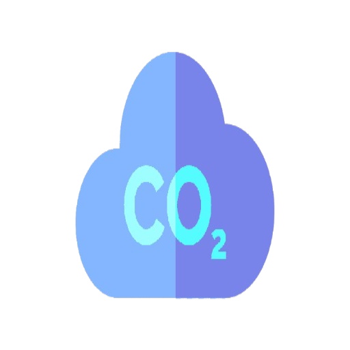
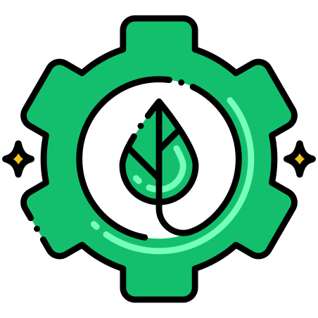
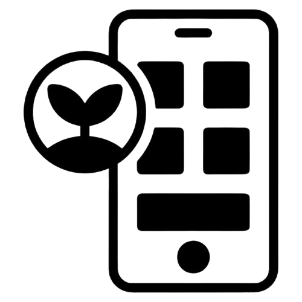

Reflorestamento e Agroflorestas
Projetos que plantam árvores em áreas desmatadas ou promovem práticas agrícolas sustentáveis.
Impacto: Absorção de CO2 da atmosfera e recuperação de ecossistemas.

Captura de Carbono e Armazenamento
Desenvolvimento de tecnologias que capturam CO2 das emissões e armazenam-no em locais subterrâneos.
Impacto: Redução das emissões globais com potencial aplicação em lançamentos espaciais.Energia Renovável
Investimento em energia solar, eólica ou hidroelétrica para alimentar instalações espaciais.
Impacto: Redução da dependência de combustíveis fósseis e pegada de carbono.Compensação de Emissões de Lançamentos
Parcerias com iniciativas que investem em projetos de energia limpa ou reflorestamento.
Impacto: Neutralização das emissões geradas durante lançamentos espaciais.

Tecnologias de Lançamento Sustentável
Foguetes que utilizam combustíveis menos poluentes ou sistemas de propulsão alternativos.
Impacto: Redução direta das emissões do transporte espacial.

Iniciativas de Monitoramento Ambiental
Uso de satélites para monitorar e relatar as emissões de carbono em tempo real.
Impacto: Suporte a políticas de redução de emissões.